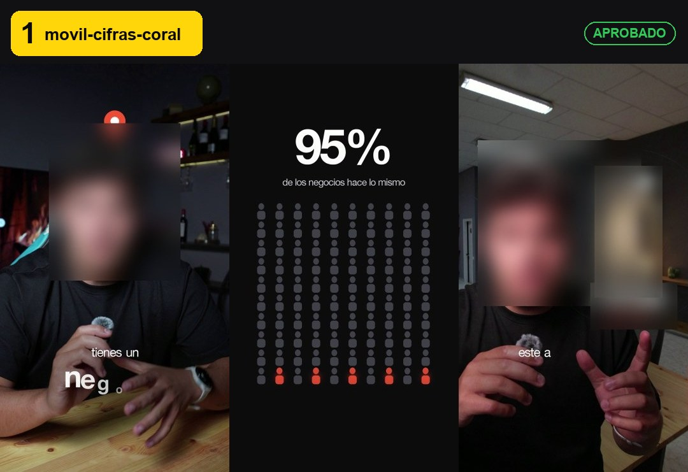
1Aprobado
movil-cifras-coral
Vender tu servicio a cámara: móvil con pantalla de bloqueo, 100 muñecos, cifra blanca + cursiva coral, subtítulos letra a letra
Vender tu servicio · motor listo
42 estilos. Elige qué vas a contar, mira la captura y copia la frase para pedírselo a Claude.

Vender tu servicio a cámara: móvil con pantalla de bloqueo, 100 muñecos, cifra blanca + cursiva coral, subtítulos letra a letra
Vender tu servicio · motor listo
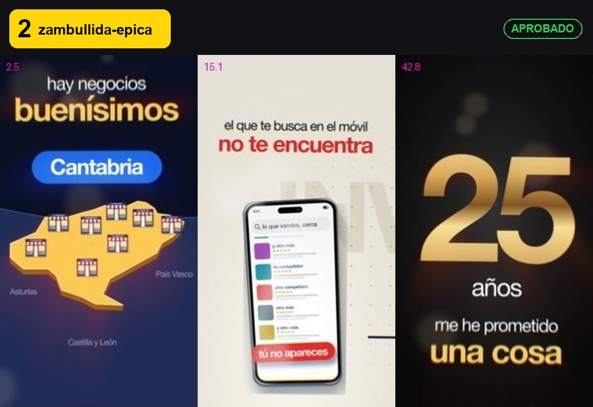
Anuncio épico con voz en off a 60 fps: la cámara se mete dentro de los objetos y la escena siguiente se abre desde dentro
Sin grabarte (voz en off) · motor listo
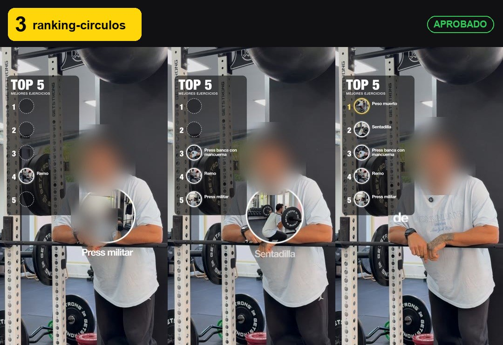
Top 5 / del 1 al 10: cada puesto con su foto en círculo que vuela a su sitio, el 1 en dorado. El favorito
Top, rankings y listas · motor listo
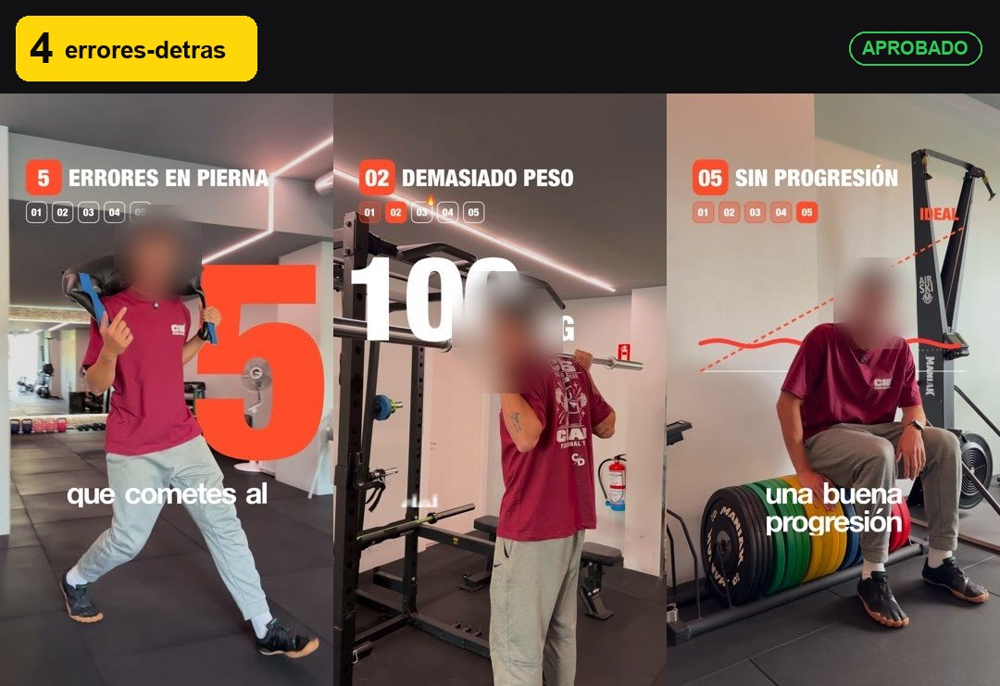
Lista de errores con un gráfico propio por punto DETRÁS del cuerpo y cierre con la ficha de Google
Top, rankings y listas · motor listo
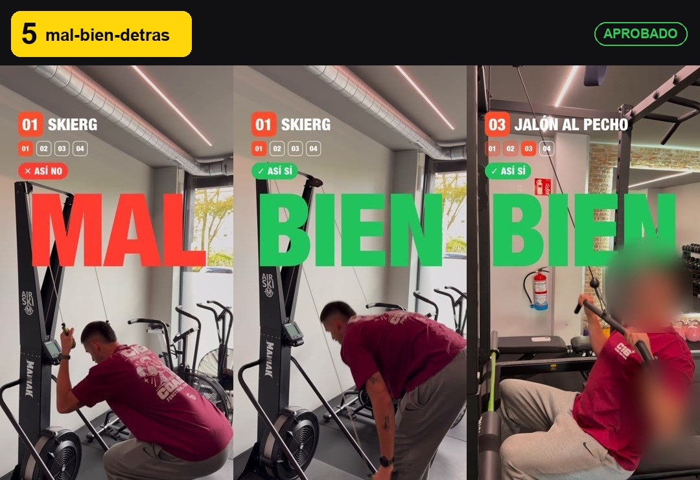
Esto está mal / esto está bien: MAL rojo y BIEN verde gigantes detrás del cuerpo
Mal / bien y mitos · motor listo
Vídeos horizontales 16:9 (YouTube, VSL, lecciones): texto gigante detrás, escenas de interfaz
Horizontal (YouTube, VSL) · motor listo
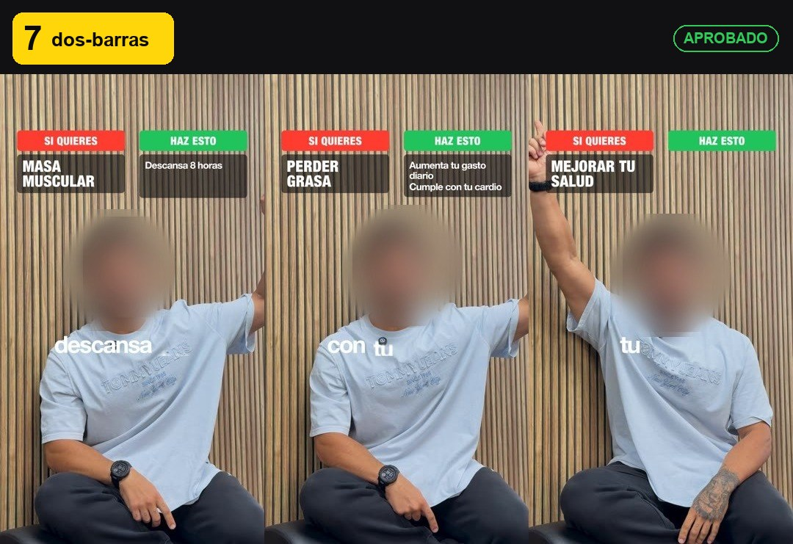
«Si quieres X, haz Y» con cajas arriba: SI QUIERES en rojo, HAZ ESTO en verde
«Si quieres X, haz Y» · motor listo
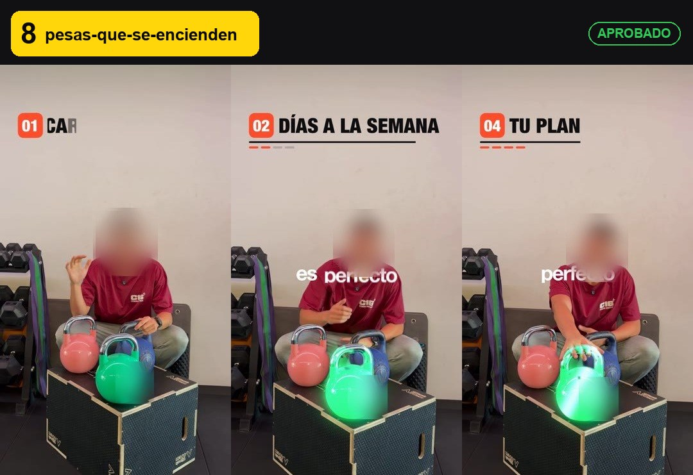
Lo malo, lo bueno y lo perfecto con objetos reales que se iluminan
Mal / bien y mitos · motor listo
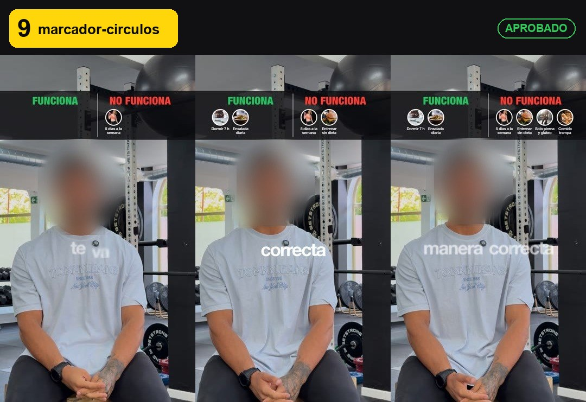
Mitos funciona / no funciona: marcador arriba con fotos en círculo
Mal / bien y mitos · motor listo
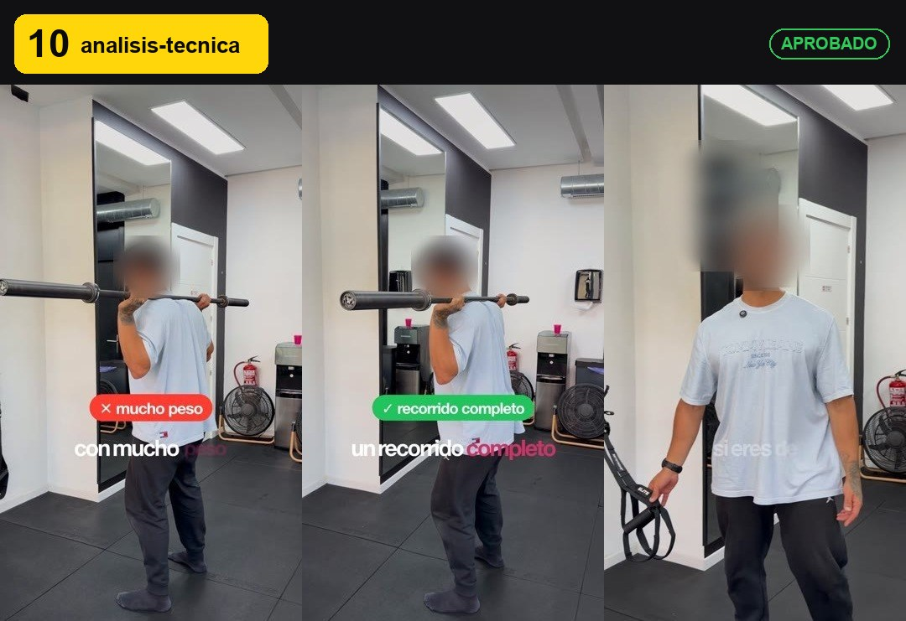
Corregir un ejercicio: congelado con líneas sobre el cuerpo, ✓/✕
Corregir un ejercicio · motor listo
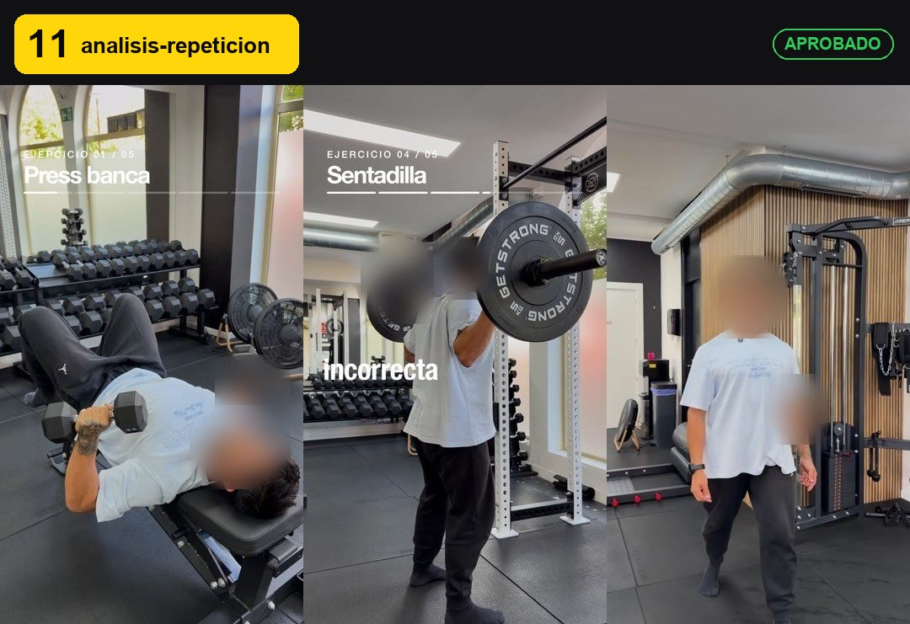
Manera incorrecta / correcta, ejercicio a ejercicio
Corregir un ejercicio · motor listo
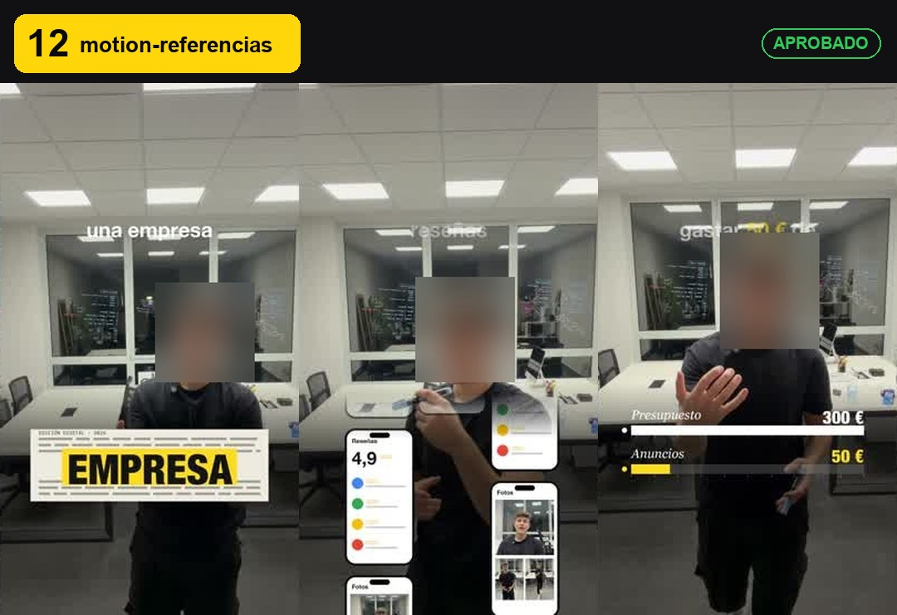
Pasos y cifras a cámara: una técnica de After Effects distinta por idea (pantalla rota, cursor, móviles, cartel, rueda, órbita, encuesta)
Opinión y consejos · motor listo
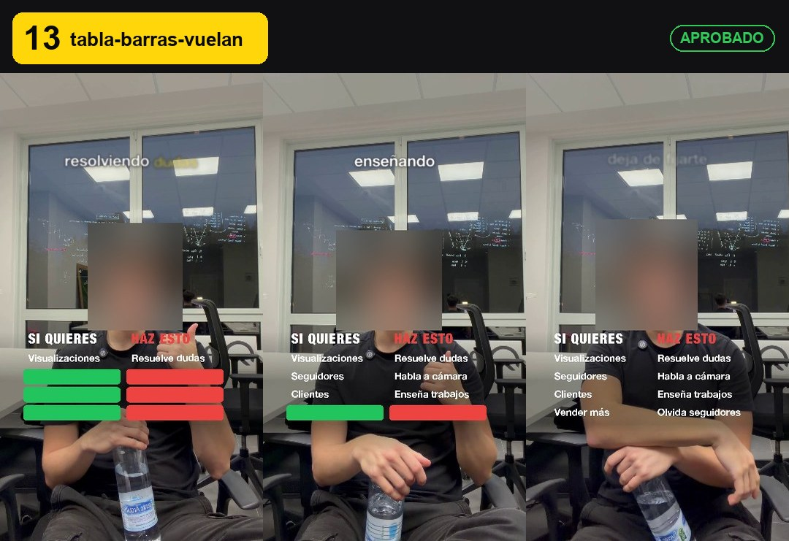
«Si quieres X, haz Y» en tabla bajo la cara: barras verdes y rojas que salen volando y dejan el texto letra a letra
«Si quieres X, haz Y» · motor listo

Persona con micro y fondo gris; redes, marketing y tecnología con apps orbitando
Opinión y consejos · Claude lo programa con la receta

Entrevista o podcast largo en plano cálido; salud, bienestar, producto
Podcast y entrevista · Claude lo programa con la receta

Persona a cámara en exterior; seguros, finanzas, servicios, inmobiliaria
Opinión y consejos · Claude lo programa con la receta

Entrevista en oficina luminosa, dos personas; negocio y emprendimiento
Podcast y entrevista · Claude lo programa con la receta

Opinión o consejo en estudio con fondo azul o neutro
Opinión y consejos · Claude lo programa con la receta

Negocio local a cámara con fondo oscuro: widgets de cristal, reseñas
Vender tu servicio · Claude lo programa con la receta

Podcast con plano oscuro: conceptos y definiciones en chips
Podcast y entrevista · Claude lo programa con la receta

Podcast con collage retro: historias, mentalidad, emprendimiento
Podcast y entrevista · Claude lo programa con la receta

Ejercicio con el error y la técnica correcta, texto detrás de la persona
Corregir un ejercicio · motor listo

Pasos o errores numerados con un contador ligero encima del cuerpo
Top, rankings y listas · motor listo

Valoraciones con medidor elegante para centros boutique
Mal / bien y mitos · motor listo

Interfaces y texto gigante para enseñar un curso o infoproducto
Sin grabarte (voz en off) · Claude lo programa con la receta

Avisos sin grabación: horario, festivos, vacaciones, promociones
Avisos y enseñar un local · Claude lo programa con la receta

Enseñar una herramienta o app con mucha energía: real y 3D alternos
Sin grabarte (voz en off) · Claude lo programa con la receta

Letra fina con palabra en negrita de color: autoridad y elegancia
Opinión y consejos · Claude lo programa con la receta

Autoridad a cámara con tipografía editorial
Opinión y consejos · Claude lo programa con la receta

Explicativo animado en 3D con voz en off, sin cortes
Sin grabarte (voz en off) · Claude lo programa con la receta

Documental de gimnasio: datos y músculo, estilo divulgación
Corregir un ejercicio · Claude lo programa con la receta

Contar una historia o una «ley» con dibujos a tinta mientras hablas
Contar una historia · Claude lo programa con la receta

Una palabra suelta grande en cada idea, nada más
Opinión y consejos · Claude lo programa con la receta

Palabras con brillo de neón sobre fondo oscuro
Opinión y consejos · Claude lo programa con la receta

Palabras gigantes detrás de tu silueta: opinión y marca personal
Opinión y consejos · Claude lo programa con la receta

Opinión con un panel negro que baja desde arriba
Opinión y consejos · Claude lo programa con la receta

Tú contra la competencia en una pizarra con marcador «vs»
Vender tu servicio · Claude lo programa con la receta

Dos personas en una mesa con micros, pregunta y respuesta
Podcast y entrevista · Claude lo programa con la receta

Texto detrás del sujeto para enseñar un local o un inmueble
Avisos y enseñar un local · Claude lo programa con la receta

Recorrido por un local o un piso con rótulos 3D en el suelo
Avisos y enseñar un local · Claude lo programa con la receta

Mitos «funciona / no funciona»: marcador arriba que se llena con fotos
Mal / bien y mitos · motor listo

Reels «épicos»: localizaciones cada 2-4 s y frases alrededor de la cara
Contar una historia · Claude lo programa con la receta